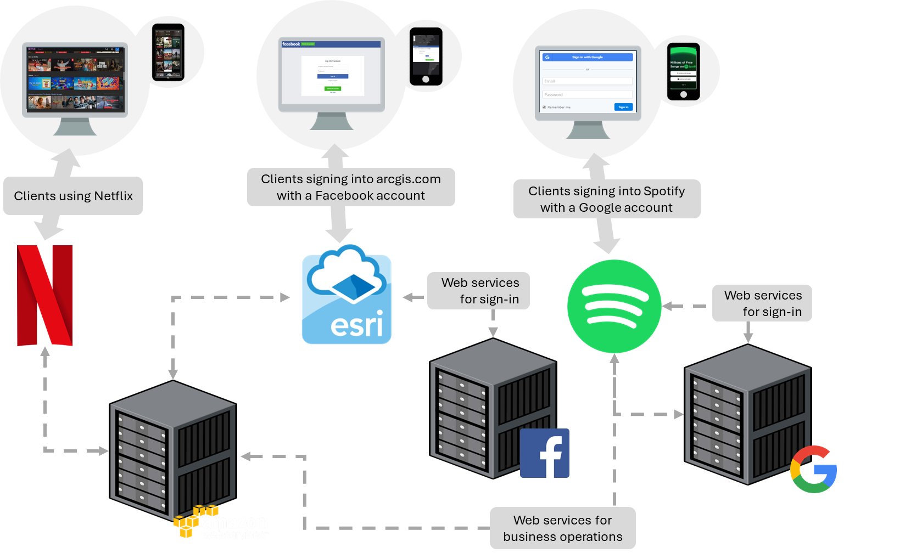
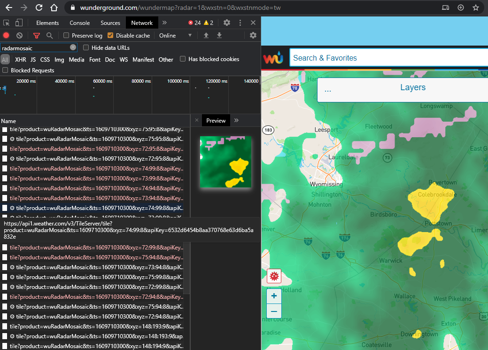
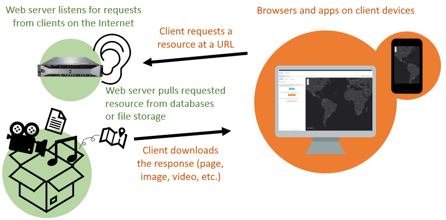
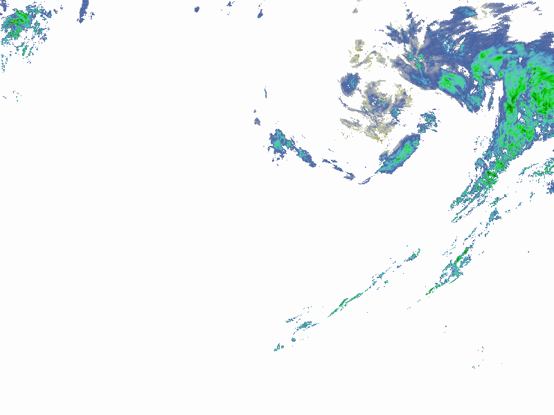
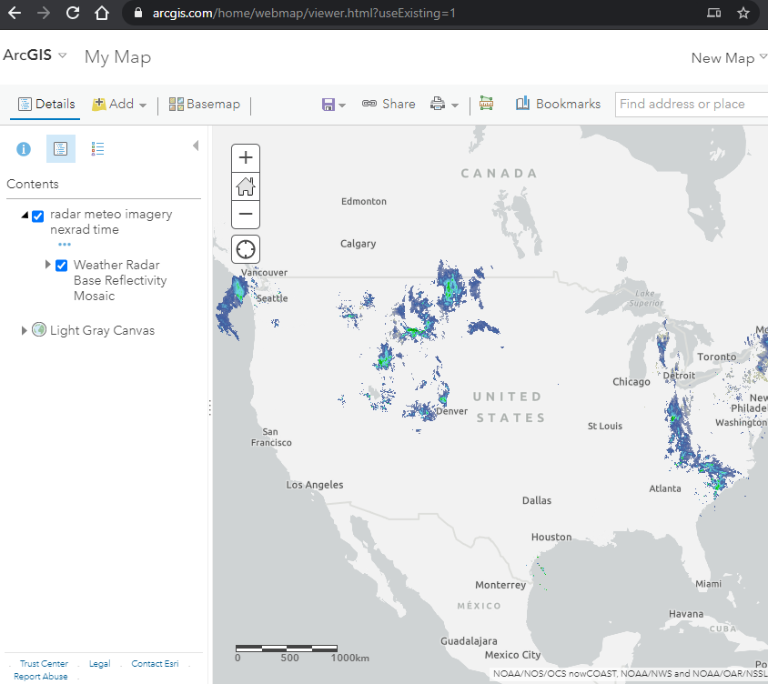
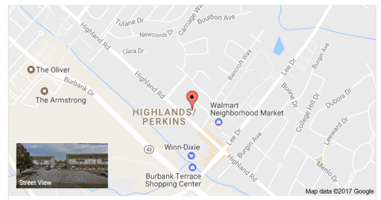

Web Services
Table of Contents
- Web service, not website
- Machines talking to machines
- The Uniform Resource Locator
- Getting a response from a web service
- Purpose and possibilities
- Conclusion
This lesson introduces web services as a technology for moving information, especially for interoperability and automation.
Web service, not website
What happens if you enter a web address such as https://www.census.gov into a web browser? You see something you have seen countless times before: a webpage.
What about the web address https://www.census.gov/content/dam/Census/about/regions/all-regions/new_ro_map.png? Again, nothing surprising: an image.
{kind=link}
Now how about the web address https://api.census.gov/data/2019/acs/acs5?get=B01003_001E&for=state:22? If the Census Bureau website is working, you should get this simple response (2019 population of Louisiana):
[["B01003_001E","state"],
["4664362","22"]]
It is not a webpage, but you have used something like this countless times as well, maybe without knowing it. You contacted an application on the Internet known as a web service and it returned data to you.
Why would anyone create such a thing? Would it not be easier to use and read that data if the U.S. Census Bureau put the population number on a website, maybe with links to other states’ data? Maybe that would be easier for humans to read, but the real utility of web services is that they are easier for machines to use.
These technologies separate the data from the presentation. The data is offered in a more raw, modular form that can “plug in” to other applications, creating interesting possibilities for automation and new apps that combine data sources.
Machines talking to machines
A web service is a program on a web server that provides access to resources like data and processing power to other applications on the web via programming interfaces, allowing communication between applications. Stated more plainly, web services are one way that machines talk to other machines online, sharing and processing data. Web services can be understood through examples better than textbook definitions, so some are given below and the assignment that accompanies this lesson gives a concrete demonstration.
Think about Facebook as an application, with the user sign-in function handled by a service. Facebook can use its own sign-in service on its website and app, but it can also open up that service to third parties. Web services are why you can use a Facebook account to sign into other websites, and why Disney+ customers can pay with PayPal, and why a Weather Underground map can show a radar layer from the Weather Channel website, and so on.
 Figure 1. Servers communicating with other servers through web services to provide resources to clients. Web services allow communication between computer systems, such as signing into ArcGIS with a Facebook account, or Spotify hosting its business operations in Google Cloud and Amazon Web Services.
 Figure 2. A weather map (wunderground.com) that displays radar imagery from a different website (weather.com) via a web service. The right panel (wunderground.com) shows the map with a mosaic of radar tiles, while the left (Chrome Developer Tools) shows the URLs of the individual tiles downloaded by my browser and pieced together on the map.
The data is not necessarily being duplicated for each of these websites. Instead, they request the data via a web service and display it through their own website. The Weather Underground website does not need a copy of all Weather Channel radar imagery, it can simply request the images directly from the Weather Channel servers and deliver them to your browser. Likewise, if you can sign into Spotify with a Google account, it is not because Spotify has a copy of all Google users and passwords, it is because their computer systems communicate via web services to authenticate your account and, if successful, sign in.
Web services can be reached through a unique address, similar to how we access websites.
The Uniform Resource Locator
Normally, a URL, or uniform resource locator, is a web address you use to go to a website, e.g., https://example.org. But URLs can point to other resources on the Internet.
The vague term “resources” is used because it does not refer to a specific type of file or form of media. A “resource” can be a document, image, video, etc. In the case of webpages, the URL might point to a document like index.html. Or it might be logo.png for an image.
But URLs do not necessarily have to point to files. When you visit most websites, you are not simply downloading an existing document file, you are triggering an application to generate a webpage document. For example, when you sign into your email hosted by Microsoft and the page shows your name at the top and lists your messages, Microsoft does not have a webpage file with your name on it already along with the text of your current messages. The page you see was generated by an application when you accessed the page, pulling your name and current messages dynamically from a database.
 Figure 3. To download webpages, images, and other resources from a web server, clients like browsers and mobile apps contact the server via its URL.
Webpages that seem personalized, or that let you interact and customize the experience, are applications that are responding to your input, including the URL you used to access the page. To use an online shopping example, going to example.com/cart might take you to a shopping cart page that shows you the products you have added, then example.com/checkout would show you a page where you can pay the amount due. In both cases, an application is generating pages triggered by the URL request, based on information the application pulled from the product database, customer database, and any other data sources needed for you to check out.
This idea of an application responding to a URL, and from that getting information from a data source, is an important concept for web services.
Getting a response from a web service
In these examples, we will interact with web services by entering their URLs into a browser. The URLs will contain input parameters, which specify what we want the web service to do for us.
Note that web services do not always accept input in the URL in this way. There are other methods outside the scope of this lesson, but if you learn more about web services, you will encounter some that work differently.
Census API
Let us go back to the URL that was used in the lesson’s introduction. We will use our web browser to access a web service for population data, the US Census Bureau Data API. An application programming interface is a system that allows a program to offer its functions to other connected programs. API is a common term in the world of web GIS, web services, and programming in general. Web services can be considered a type of API, as they are an interface for applications to talk to each other.
https://api.census.gov/data/2019/acs/acs5?get=B01003_001E&for=state:22
The text in the URL above specifies what information we are requesting from the server. This endpoint, or URL for a web service, points to a U.S. Census Bureau application that returns census data based on your request parameters. Note these two parameters in the URL that let us specify what piece of data we are requesting and which US state we want it for:
get=B01003_001E
for=state:22
The value B01003_001E is the code for total population and 22 is the code for Louisiana. This endpoint triggers the Census Bureau application to dig into its data sources to find the population of Louisiana. Once found, the application responds in text format, sending the following output across the Internet to your web browser.
[["B01003_001E","state"],
["4664362","22"]]
We just used a web service!
The first line of the response above can be thought of like column headings in a spreadsheet: the first “column” is B01003_001E, which is the population, and the second “column” state is the US state. Then the second row has the values, i.e., the population of Louisiana. Test what happens when you add another state into your request by changing the state input parameter (hint: 23 is the code for Maine):
for=state:22,23
In the response, you should see an additional “row” of data: the population of Maine.
Wikipedia API
Another example can be seen with Wikipedia, where you can read an article by visiting the Wikipedia website or through alternative means of access that Wikipedia provides. Enter this address in your browser:
https://en.wikipedia.org/api/rest_v1/page/summary/Roger%20Tomlinson
Instead of seeing a webpage with an article, you should see structured data. That is because the link does not point to the usual Wikipedia address, it points to another web application meant to serve data. Here, the data the address is retrieving is the “extract” portion of the Wikipedia article for Roger Tomlinson.
...
"extract": "Roger Frank Tomlinson was an English-Canadian geographer and the primary originator of modern geographic information systems (GIS), and has been acknowledged as the \"father of GIS.\"",
...
By creating this web service, Wikipedia is opening up access to their database of article data so the content can be reused by other applications more easily.
Google Maps Geocoding API
Now take a look at another example using one of Google’s web services. This is a URL for Google’s geocoding service. It turns street addresses into latitude and longitude coordinates.
You can pick out the street address at the end of the URL, where it is assigned to a variable named address.
The response looks like a lot of code, from which we can pick out the part that gives the latitude and longitude.
...
"formatted_address" : "5151 Highland Rd, Baton Rouge, LA 70808, USA",
"geometry" : {
"location" : {
"lat" : 30.3964204,
"lng" : -91.16252729999999
},
...
Yet another example URL for the geocoding service does a reverse lookup and gives us an address based on the latitude and longitude we put in the URL:
At the end of the URL you can see the variable “latlng” and it is equal to “30,-90”, a simple latitude and longitude pair. In the result you can find the full address that the API found for those coordinates.
...
"formatted_address" : "7501 Terminal Rd, New Orleans, LA 70126, USA",
...
NOAA web service
Here is one last example of a web service, showing current weather radar. The resource this long URL returns is an image.
 Figure 4. Response from a NOAA weather radar web service showing current precipitation at the time the image was captured. The response is an image covering the continental U.S., demonstrating that web services can return more types of information than only text.
You can see, though, that the image is of limited use by itself; it is intended to be consumed by an application that then does something with it, like overlay it onto a national map. For example, ArcGIS Online can display map data from a web service.
 Figure 5. The ArcGIS Online Map Viewer is an application capable of displaying the response of a web map service. The radar imagery shown in the viewer comes from a NOAA web service, while the gray basemap in the background comes from an Esri web service.
Purpose and possibilities
If a web service is not a website, then what are we seeing when we enter these URLs? The response we see is the output of a program dedicated to a specific type of input and output. So, when we contact this web service via its endpoint URL, we are running a program.
Meant for machines, not people
Why isn’t the output of these programs easier to read? Actually, we are not using the web services as intended when we try to view them in the browser. Web service responses are not really meant to be seen, or “consumed”, by humans at all, at least not in their raw form. Instead, web services are meant to be used by other applications. They are a way for applications to communicate with one another.
If a human wants to see an address location on a map, they can just put the address into a search engine and see a map in the results. Behind the scenes, however, there are applications using services to work together to generate those results. Google Search is using Google’s geocoding service, sending your input to the service, receiving the response, and nicely displaying it on a map with the help of Google’s other map-related web services.
 Figure 6. Google search results for the address “5151 Highland Rd, Baton Rouge, LA 70808, USA”, showing the address location as a point on a map. Google Search uses the Google Maps Geocoding API behind the scenes to translate the address into latitude and longitude coordinates (30.3964204, -91.1625273).
The significance here is that, since web services can transfer information between applications, they can enable automation: applications do not always need a human operator, or a human manually copying data from system to system. For something like weather that changes often, it would be hard to imagine a weather app that required the developer to manually go to a government website to download new radar data every 15 minutes, then upload it into their own application. With web services, they don’t have to. The dataset is provided as a utility that is always on and connected (like electricity), “streaming” the most up-to-date information into their app’s logic or onto the screen for users.
Interoperability
Where the web was once a place where information was exchanged between people and applications, it is increasingly a system for connecting applications to each other through web services. The ability of applications to exchange information with other computer systems is known as interoperability.
Google’s geocoding API is not only used by Google; they make it available for use by third parties. For example, imagine you are developing a ride sharing mobile app and it needs to display a street address for rider locations. The app takes the phone’s current GPS coordinates and sends them to maps.googleapis.com, which matches the coordinates with an address. Then the app reads the response from the API and extracts the address, and then finally the app prints the address on screen to the user.
That is much easier than trying to take on the immense task of developing a geocoding application yourself, allowing you to focus on your ride sharing app (earlier in its development, Uber used the Google Maps APIs).
Another implication of web services is that data can be opened up to use in other applications, rather than being kept offline or only used through the provider’s website. Google could keep its geocoding service closed, available only through Google websites, but instead they operate it as a service that third parties can connect to.
NOAA, for example, makes its weather radar imagery and other data available as a web service. Anyone can make a website or application that uses this data. That is much more useful than if NOAA forced users to view its own website (which until recently was quite outdated).
This reinforces that web services help separate the data from the presentation, and the capability for programmatic access opens up possibilities for automation.
Conclusion
Web services are a core part of web GIS. They allow geographic information (map data) to be spread and re-used in websites and applications for research, commerce, administration, personal use, etc. Maps, a form of information that has existed for thousands of years, are now also following this trend and being turned into web services to be consumed not just by humans but applications. If map layers are offered as web services, they can be re-used by many applications, and those applications can combine layers from other providers, too. This increases the potential for data to be shared and put to use.
↑ Top
← Back to Lessons